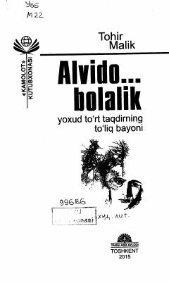

ABO'smirlar tarbiyasi va jinoyat olamining xavflari haqidagi ta'sirli roman.
Ushbu roman o'smirlarning jinoyat olamiga kirib qolishi va bu jarayonning salbiy oqibatlari haqida hikoya qiladi. Asarda yoshlarning tarbiyasi, oiladagi e'tiborsizlik va hayotiy xatolar real voqealar asosida yoritib berilgan. Muallif yoshlarni ogohlantirish va ularni yomon yo'ldan saqlab qolish muhimligini ta'kidlaydi.